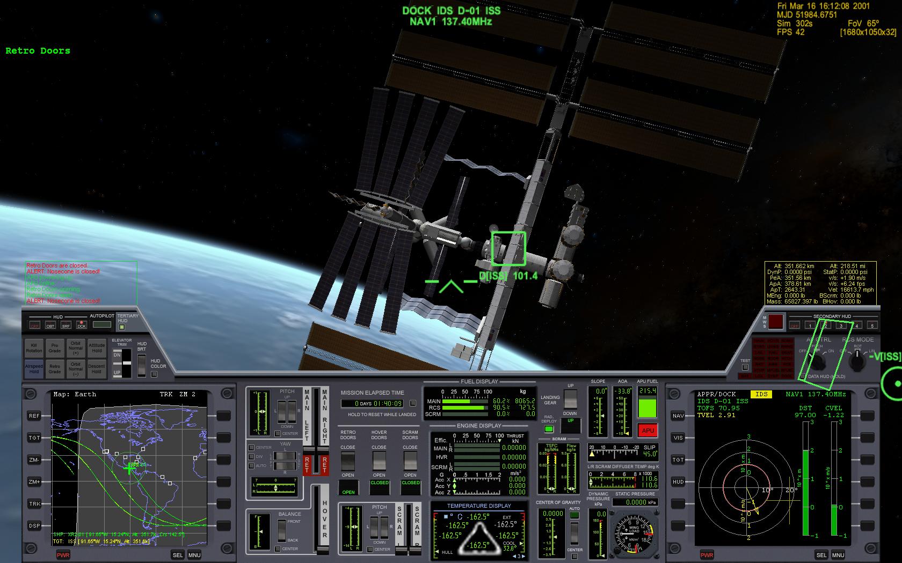

dvolk.github.io
This page
This page is a port from my old static site generator (which I called bloggen.py) to the org-mode theme Oolook.
This content was last updated 2016. Keep that in mind as you gaze into the abyss.
A Quick Look at Haskell
2014-05-01
Environment
Haskell is defined in the Haskell Report.
The most used compiler is GHC (debian package ghc, ghc-doc).
Haskell projects are typically built and packaged using Cabal (cabal-install).
There is an online package repository called Hackage.
Types
"Hello " ++ " World"
is an expression. Its value is
"Hello World"
Its type is
String
Types are declared using the reserved operator :: (read as "has type")
xs = "Hello World" :: String
Here xs is a variable.
Variables and types names are case sensitive. Variable names begin with a lowercase character and type names begin with an uppercase character.
Type declarations are optional. In their absence, Haskell will infer the types. If it can't, you'll be asked to provide them.
Functions
Defining and calling functions is very simple
addTwoLengths :: String -> String -> Int addTwoLengths xs ys = length xs + length ys
A function can be defined for different arguments (the order in which the definitions are written is important)
fac :: Int -> Int fac 1 = 1 fac n = n * fac (n - 1)
Let
We can define local variables with let … in …
squaredDistance :: Int -> Int -> Int -> Int -> Int squaredDistance x1 y1 x2 y2 = let dx = x1 - x2 dy = y1 - y2 in dx ^ 2 + dy ^ 2
Partial application
A function can be partially applied, creating a new function
sdFrom11 :: Int -> Int -> Int sdFrom11 = squaredDistance 1 1 sdFrom11 4 4 :: Int
Composition
Two functions can be composed, creating a new function
f = fac . length :: String -> Int
is the same as
f n = fac (length n) :: String -> Int
Anonymous functions
We can define an anonymous function (lambda) with \args -> body
doubleLength = (\n -> n * 2) . length
Higher-order functions
It's possible to pass functions as arguments to functions and have functions return functions.
For example, map transforms a list by applying a function to every
element.
map (\n -> n + 1) [1,2,3]
┌-<-<-<-<-<-┐ | | v | map :: (a -> b) -> [a] -> [b] ^^^^^^^^ ^^^ ^^^--- [2,3,4] | | | └--- [1,2,3] \n -> n + 1
Algebraic Data Types
Sum types
The simplest example of a sum type is
data Bool = True | False
Bool value is either True or False.
x = True :: Bool
Product types
A product type is defined as
data Person = Person String Int ^^^^^^ ^^^^^^ ^^^^^^ ^^^ | | | | | | └-----┴----- data constructor parameters | | | └-- data constructor | └-- type constructor
The Person on the left side is the type constructor. The Person on
the right side is the data constructor. These don't have to have the
same name, but they often do, to the chagrin of Haskell newbies
everywhere.
To create a value of type Person, use the Person data constructor:
p :: Person p = Person "Morty" 22
Named data constructor parameters
Data constructor parameters can be named
data Person = Person { name :: String , age :: Int }
then an alternative way to create a Person is to write
p = Person { name = "Morthy" , age = 22 }
Type constructor parameters
Type constructors can have parameters
data Maybe a = Nothing | Just a
where a is a type.
greeting = Just "Hello" :: Maybe String name = Nothing :: Maybe String
Compound example
For example, a ship may or may not have a captain
data Ship = Ship { shipName :: String , captain :: Maybe Person }
We can make a Ship with one
s1 = Ship { shipName = "Queen Elizabeth 2" , captain = Just ( Person "William Cooper" 50 ) }
And one without
s2 = Ship { shipName = "Dinghy" , captain = Nothing }
Data constructor parameter namespace
In the above example, Person had a name parameter, but Ship had a
shipName parameter. This is because data constructor parameters share
one namespace and cannot be reused in different data types. And that's
because…
Data constructor named parameters are functions
These are automatically generated for you
name :: Person -> String age :: Person -> Int shipName :: Ship -> Maybe String captain :: Ship -> Maybe Person
Different functions (in the same module) can't have the same name.
Updating values with named constructor parameters
We can take an existing data type with named constructor parameters and
update it. For example, to remove the captain from s1 above
s3 = s1 { captain = Nothing }
This creates a new copy of s1, s3, changing the parameters supplied.
Recursive data types
data type definitions can be recursive
data List a = Nil | Append a (List a)
a List of a is then either Nil (empty list) or an element of type
a appended to a List of type a.
l :: List Int l = Append 1 (Append 2 (Append 3 (Append 4 Nil)))
Lists
Lists are a built-in recursive data type. They're constructed with the
cons operator ":"
1 : ( 2 : ( 3 : ( 4 : [] )))
Haskell provides an easier way to write the above
[1, 2, 3, 4] :: [Int]
A String is a list of Char
s = "Hello World" :: [Char]
Tuples
A tuple is a fixed size container. Unlike lists, a tuple may contain different types
for example
("Proxima Centauri", 3, 4, 5) :: (String, Int, Int, Int)
If and case
if … then … else … is an expression. The else is mandatory
(what value would the expression evaluate to if it wasn't?)
describeIntSign :: Int -> String describeIntSign n = if n > 0 then "positive" else "negative"
case … of … is also an expression, but a bit more general than
if.
describeInt :: Int -> String describeInt n = case n of 0 -> "zero" 1 -> "one" 2 -> "two" _ -> "I don't know that number"
Deconstructing values
Data type values can be deconstructed with pattern matching in function arguments
data Person = Person { name :: Maybe String , age :: Int } nonsense :: Person -> Int nonsense (Person Nothing a) = a nonsense (Person (Just n) a) = length n + a
here n and a will be locally bound to name (when it isn't
Nothing) and age of the person.
We can also pattern match in case expressions
case p of Person Nothing a -> "This person doesn't have a name" Person (Just n) a -> "This person's name is " ++ n
and let expressions
let (Person _ a) = p in a + 1
use _ to indicate that you don't care about a parameter.
Lists and tuples can also be pattern matched.
headIntList :: [Int] -> Int head (first:rest) = first ^^^^^^^^^^ | recall, a list is an element appended (:'ed) to the rest of the list swapPair :: (Int, Int) -> (Int, Int) swapPair (x, y) = (y, x)
Parametric polymorphism
Defining a new function for each type of list like above would be silly. Haskell allows us to write generic/polymorphic functions.
┌-- type variables, a is any type | ├-----┐ | | v v head :: [a] -> a head (first:rest) = first swap :: (a, b) -> (b, a) swap (a, b) = (b, a)
type variables are always lowercase.
Typeclasses
Typeclasses allow you to overload functions
class Eq a where (==) :: a -> a -> Bool
types are instances of typeclasses
instance Eq Char where (==) = ...
Standard typeclasses
You can make your own, but Haskell already defines many typeclasses
| typeclass | functions |
|---|---|
| Eq | (==), (/=) |
| Ord | (<), (<=), (>=), (>), max, min |
| Enum | succ, pred, toEnum, fromEnum, enumFrom, enumFromThen, enumFromTo, enumFromThenTo |
| Num | (+), (-), (⋆), negate, abs, signum, fromInteger |
| Real | toRational |
| Integral | quot, rem, div, mod, quotRem, divMod, toInteger |
| Fractional | (/), recip, fromRational |
| Floating | pi, exp, log, sqrt, (⋆⋆), logBase, sin, cos, tan, asin, acos, atan, sinh, cosh, tanh, asinh, atanh |
| RealFrac | properFraction, truncate, round, ceiling, floor |
| RealFloat | floatRadix, floatDigits, floatRange, decodeFloat, encodeFloat, exponent, significand, scaleFloat, isNaN, isInfinite, isDenormalized, isIEEE, isNegativeZero, atan2 |
| Monad | (>>=), (>>), return, fail |
| Functor | fmap |
Automatic deriving
Haskell can automatically derive some typeclass instances for your data types (restrictions may apply). E.g.
data Person = Person String Int deriving Eq p1 = Person "Rick" 50 p2 = Person "Morty" 12 p1 == p2 :: Bool
Show & Read
Show and Read are two important typeclasses. They implement show
and read and can be automatically derived.
show :: Show a => a -> String read :: Read a => String -> a
That is, for types with a Show instance, show will turn the value
into a String. For types with a Read instance, read will turn the
String into the value of type a
data Person = Person String Int deriving (Eq, Show, Read) p1 = read "Person \"Rick\" 50" :: Person show p1 :: String
You should not use read unless you know that the string is valid. An
invalid string will cause a runtime error.
for inputs that may fail to parse, use readMaybe
Text.Read.readMaybe :: Read a => String -> Maybe a
IO
Example: Echoing input line
Understanding how IO works in Haskell requires an unusual amount of background knowledge compared to other programming languages. It's best to begin with an example.
Haskell executables begin with the main function.
main :: IO () main = getLine >>= putStrLn
The types of these functions (often called actions) are
getLine :: IO String putStrLn :: String -> IO ()
(>>=) chains them together
(>>=) :: IO a -> (a -> IO b) -> IO b ^^^^ ^^^^^^^^^^^ ^^^^ | | | getLine --┘ | | | └-- main putStrLn ---┘
Example: Guess the number
What if we want to chain together two IO a actions like putStrLn?
Replace the second one with a lambda that ignores its argument.
putStrLn "Hello" >>= \_ -> putStrLn "World" ^^^^^^^^^^^^^^^^ ^^^^^^^^^^^^^^^^^^^^^^ | | IO a a -> IO b
We can make a "guess the number" game with these functions (and randomRIO)
import Text.Read import System.Random guessGame :: Int -> IO () guessGame n = putStrLn "Guess the number (1-10): " >>= \_ -> getLine >>= \input -> case readMaybe input of Nothing -> putStrLn "not sure what you just typed!" >>= \_ -> guessGame n Just guess -> if guess == n then putStrLn "You guessed it!" else putStrLn "Wrong!" >>= \_ -> guessGame n main :: IO () main = randomIO (1,10) >>= guessGame
Do notation
Haskell provides a nicer notation of composing IO actions with do notation
import Text.Read import System.Random guessGame :: Int -> IO () guessGame n = do putStrLn "Guess the number (1-10): " input <- getLine case readMaybe input of Nothing -> do putStrLn "not sure what you just typed!" guessGame n Just guess -> if guess == n then putStrLn "You guessed it!" else do putStrLn "Wrong!" guessGame n main :: IO () main = do n <- randomRIO (1,10) guessGame n
Looping
We can loop with the monadic map mapM_
┌-<-<-<-<-<-<-<-┐ | | v | map M _ :: (a -> IO ()) -> [a] -> IO () ^ ^ ^^^^^^^^^^^^ ^^^ ^^^^^ | | | | | | | └-- action | no results returned | | to run | works on Monads ┘ | | | └-- list to run it on discards results ┘ ^^^^^^^^^^^^^^^^^^^^^ naming convention
For example, to print the ASCII value of Char from A to Z
main = mapM_ (print . fromEnum) ['A'..'Z']
where
print :: Show a => a -> IO () fromEnum :: Enum a => a -> Int
This type of looping is more limited than for (;;) from C-like
languages - you cannot break out of it for one. Instead of having a
few general control structures, Haskell has many specialized ones, and
the ability to easily write your own.
Concurrent IO
Haskell comes with light concurrency primitives. So light in fact that
it might be better to use one of the abstractions built on top of them,
like the async package:
async :: IO a -> IO (Async a) ^^^^ ^^^^^^^^^^^^ | | computation to run v | v | ┌--<-<-<-<-<--┘ v | v | vvvvvvv wait :: Async a -> IO a ^^^^ | result of computation
For example we can spawn ten threads that do some work, wait for the results and then print them.
import Control.Concurrent import Control.Concurrent.Async main = do let worker n = do threadDelay (10^6) return (n * 2) ts <- mapM (async . worker) [1..10] results <- mapM wait ts mapM_ print results
Note that return is a function with type a -> IO a. It has no flow
control meaning like in many languages. It's simply turning the Int
into an IO Int.
More
- https://www.haskell.org/tutorial/ - A Gentle Introduction to Haskell, Version 98 (slightly misleading title)
- https://www.haskell.org/ghc/docs/latest/html/libraries/index.html - Documentation for the libraries that come with GHC
- http://book.realworldhaskell.org/ - Real World Haskell
- http://community.haskell.org/~simonmar/pcph/ - Parallel and Concurrent Programming in Haskell
- https://en.wikibooks.org/wiki/Haskell Haskell Wikibook
A guide to installing a custom, minimal(ish) GNU/Linux system
2014-05-01
Introduction
Ubuntu is often believed to be bloated and slow, and users are recommended to install other distributions like Arch Linux if they want to have a 'lean' system. This belief is mistaken. Ubuntu can provide a very good mix of leanness and convenience.
This page is a beginner's guide on how to install and setup such a system. It's based on my own preferences and notes.
I used 14.4 for testing to write this, but everything should work with versions 12.4 and later. If it changes then I will update it.
Install
Picking the right installer
Ubuntu media come in two forms: desktop and server. The desktop installer doesn't offer many options. We'll be getting the server image from:
I recommend getting the latest release. The system can be upgraded to a new release fairly easily.
Before Proceeding
As always, backup important data and find some room for a new install. If you have any kind of special setup not covered here (such as UEFI or PPPoE), you should either read about it carefully before installation or have another Internet-capable device nearby.
Boot options
Once you've booted the install media, you will have access to additional options through the function keys F1-F6.
Some to consider are:
- Expert mode Enabling this gives more options in the installer. You shouldn't need most of the options, but one that's interesting is that you can choose to have a separate /home partition, or separate /home, /usr, /var, and /tmp partitions. Having separate partitions can sometimes be useful. On the other hand, it's annoying if you run out of space on one of them.
- Install a minimal system Enabling this will install a slightly smaller system (1.1G normally, 1G with 'minimal')
- Free software only If you enable this, the installer won't add the multiverse and restricted software repositories.
Select 'Install Ubuntu Server' and press enter to boot into the installer
Some installation options
The installer will ask you some simple questions.
After setting up a user, it will ask you if you want to encrypt the user(s) home directories. The method used seems rather inconvenient. I recommend saying no here.
When partitioning disks, the installer will ask you what partitioning method to use. I strongly recommend picking encrypted LVM. This will encrypt all partitions except /boot.
The weakest part of the encryption will be your passphrase. Read carefully and pick a good one.
The installer will ask you if you want automatic security updates. This is a good idea and it's easy to toggle it later if you change your mind.
Next is the software selection. Leave everything unchecked unless you actually want it.
The system will install and then reboot.
Post-install
Using tmux
Login as the user you created. Tmux is very useful for managing terminals. It's already installed, all you need to do is, well… run 'tmux'
If you've never used it before, Control-b ? (usually written as: C-b ?) will bring up the keybindings.
Firewall
It's not a bad idea to immediately enable the firewall:
sudo ufw enable sudo ufw default deny outgoing sudo ufw allow out 80/tcp sudo ufw allow out 443/tcp sudo ufw allow out to <DNS SERVER IP HERE> port 53
This will drop all incoming connections, and all outgoing connections except HTTP and HTTPS. You should add rules here only as required.
If your dns server was set automatically through DHCP or PPPoE, you can find it with
cat /etc/resolv.conf
Setting apt defaults
open /etc/apt/apt.conf for editing
sudo apt-get install zile sudo zile /etc/apt/apt.conf
and add
APT::Install-Recommends "0"; APT::Install-Suggests "0";
This will make apt-get not consider recommended and suggested packages as dependencies. It will still print what it recommends installing every time you install a package through apt-get, so you'll need to consider what you actually need.
Updating
The packages that came on the install media are probably outdated. It's important to update to the latest
sudo apt-get update sudo apt-get dist-upgrade
It's not a bad idea to reboot after this.
World un-readable
By default, anyone can read files that users create. This is for compatibility with services like HTTP servers, but if you're not using those it's possible to slightly increase security by making your files accessible to you.
First we need make sure only you have access to your home directory
chmod -R go-rwx ~
Then open ~/.bashrc and put
umask 077
at the end. This makes it so newly created files can't be accessed by other users.
Tracking /etc
It's a good idea to keep track of what happens in /etc. etckeeper is a wrapper around version control systems that does this
sudo apt-get install etckeeper git
etckeeper assumes you're using the bazaar VCS, but I chose git because it's what I know best. We need to uncomment git by removing the #
VCS="git"
in /etc/etckeeper/etckeeper.conf
and also comment out the other one with
#VCS="bzr"
Had you installed bzr, it would have initialized etckeeper automatically, but on other VCS you have to do it yourself
sudo etckeeper init
etckeeper will auto-add and commit everything in /etc every time you add or remove packages through apt-get. Let's try it out by installing a fancy git tool!
sudo apt-get install tig
now you can run
cd etc; sudo tig
to browse changes in /etc
X.Org
It's time to install X.Org
sudo apt-get install xserver-xorg xinit i3 rxvt-unicode
open ~/.xinitrc and add
exec i3
Now start it:
xinit -- -nolisten tcp
Setting up X was painful for a long time. Every time I do this and it just works I feel like I'm living in the future.
This should start up X.Org with the i3 window manager. After you accept the default settings you should have blank screen.
Press WinKey-Enter twice (usually written as: M-return, M for meta) to open two terminals. Then press M-S-down (S = shift) arrow to rearrange the terminal layout
If you haven't used i3 before, read the man page for more keybindings and then experiment. It's a very useful window manager.
The statusbar just displays which workspace we're on which isn't very useful and wastes space. Let's comment it out in at the end of ~/.i3/config:
#bar {
# status_command i3status
#}
Since we're there let's also add another keybinding:
bindsym $mod+b border toggle
Now if you reload i3 by pressing M-S-r the statusbar should disappear.
Pressing M-b will toggle the decorations for the focused window, which is useful for saving screen space.
ranger & ncdu
While using bash and coreutils is fine, at some point you'll probably want a more specialized interface for managing files. Once such interface is ranger:
ncdu is a ncurses interface to du - disk usage utility. It makes it very easy to see what's eating up disk space.
sudo apt-get install ranger ncdu
Press ? to load the man page.
Firefox
Let's install Firefox
sudo apt-get install firefox
The firefox package comes with an AppArmor profile, so let's take care of that before starting firefox for the first time
AppArmor
Normally, an application running with a user id is able to do anything the user can do. AppArmor is a Linux kernel module that additionally restricts programs. An AppArmor profile for a program lists all files and capabilities that the program is allowed to use. Anything not on the list is denied and logged. For example, it's possible to restrict a PDF reader to only be able to read files with the .pdf extension, and deny write and network access altogether (for some reason this is an exercise left to the reader however). AppArmor implements so-called Mandatory Access Controls. It's not the most sophisticated MAC framework, but it is probably the most convenient to use.
Ubuntu comes with AppArmor enabled, all we need to do is install extra profiles and turn the profiles to enforcing mode.
sudo apt-get install apparmor-profiles apparmor-utils cd /etc/apparmor.d/ sudo find . -maxdepth 1 -type f -exec aa-enforce '{}' \;
You can check that the profiles are enforced by running
aa-status
More Firefox
Now that we've enabled the AA profile for firefox, it's time to start and configure it
Press M-2 to switch to the second workspace, press M-d to bring up dmenu, type in firefox and press enter to run it.
Open the preferences and press M-w to switch to a tabbed layout.
Type in about:blank as your home page.
We can take some simple precautions to help avoid being tracked by corporations and agencies on the web:
On the privacy tab, select 'custom settings for history', then set 'accept third-party cookies' to never and 'keep until' to 'I close firefox'. Check 'clear history when firefox closes', click settings and check all the options except 'saved passwords'. Uncheck the two 'Remember…' options above.
Since we're here. Go to advanced - data choices and uncheck the health and crash reporters.
One of the best things about firefox is how many addons there are for it. Here are some I recommend
- Tree Style Tabs https://addons.mozilla.org/en-US/firefox/addon/tree-style-tab/
- Noscript https://addons.mozilla.org/en-US/firefox/addon/noscript/
- Adblock Plus https://addons.mozilla.org/en-US/firefox/addon/adblock-plus/
- Requestpolicy https://addons.mozilla.org/en-US/firefox/addon/requestpolicy/
- Refcontrol https://addons.mozilla.org/en-US/firefox/addon/refcontrol/
- HTTPS everywhere https://www.eff.org/https-everywhere
These are only the most basic tweaks. Firefox is a beast.
Youtube sans flash
Youtube is entertaining and sometimes even useful. Browser plugins on the other hand are a terrible idea and HTML5 doesn't always work. Fortunately there's a way around these problems
sudo apt-get install mplayer youtube-dl
We can now download and play videos:
youtube-dl -f 18 http://www.youtube.com/watch?v=UdfY25gDjK8 mplayer Richard\ Stallman\ signs\ my\ laptop\ and\ removes\ Windows\ 8\ license-UdfY25gDjK8.mp4
It used to be possible to play videos directly without saving them by using youtube-dl -g, but google now returns HTTPS URLs and mplayer only understands HTTP.
Despite the name, youtube-dl supports quite a few video sites.
GTK2 appearance
The default look of GTK is not the best. The easiest way to change it is to install and run lxappearance.
sudo apt-get install lxappearance gtk2-engines lxappearnace
apt-file
It's often useful to know which package a file came from. apt-file is a tool for searching files in packages.
sudo apt-get install apt-file sudo apt-file update
As a test we can look for packages that come with AppArmor profiles:
apt-file search '/etc/apparmor.d'
Other software
Some recommendations
- lyx a WYSIWYG editor that exports to LaTeX (and so PDF, DVI). For writing everything from letters to books. Especially useful for anything science-y
- emacs an editor that's also a web browser, video editor, spreadsheet, IRC and mail client,…
- gimp raster graphics editor
- audacity audio editor
- ffmpeg very capable command-line video/audio editor
- irssi IRC client
- zathura PDF viewer
- djview4 DJVU viewer
- mutt IMAP/SMTP email client
- feh miniaml image viewer
- rtorrent minimal torrent client
grsecurity
Why and how
grsecurity is a patch for the linux kernel that provides many additional security features including its own MAC framework. It is not part of the kernel (at the moment) so it has to be installed manually.
Is it necessary? Good question. But building a kernel is fun and you should do it at least once.
Building the Linux kernel
We'll need some tools
sudo apt-get install build-essential libncurses5-dev gcc-4.8-plugin-dev
mkdir ~/src
cd ~/src
go to
and download the latest kernel source. Grab the matching grsecurity patch and gradm from
https://grsecurity.net/download.php
Download the key and signatures, and let's verify the downloads:
gpg --import spender-gpg-key.asc gpg --verify grsecurity*.patch.sig grsecurity*.patch gpg --verify gradm*.tar.gz.sig gradm*.tar.gz
and the Linux kernel source too (keyservers live on port 11371):
sudo ufw allow out 11371/tcp gpg --recv-keys 6092693E xz -cd linux-*.tar.xz | gpg --verify linux-*.tar.sign -
gpg will complain that the keys aren't trusted. But that is a tricky affair.
tar xf linux*.tar.gz
cd linux*
patch -p1 < ../grsecurity*.patch
make menuconfig
At this point you will get menu system with many options and you should look over them carefully. Since we've patched with grsecurity, you should enable it in Security Options, or it's all for naught. Prominent options you may want to disable are various hotplugging features and IA32 emulation.
Once you're done, it's time to build the kernel
make deb-pkg
If you have more than one core, you can parallelize the build process with -jN, e.g.:
make -j8 deb-pkg
Once it's done, you'll have fresh kernel packages. Install them with
dpkg -i *.deb
Reboot and select the new kernel on the boot loader.
It doesn't work
Your system didn't boot, or perhaps the keyboard isn't responding, or your sound card isn't detected. That's OK. It might take a couple of iterations to get everything working the first time. Try again.
Orbiter Space Flight Simulator on GNU/Linux HOW-TO
2014-04-15
Introduction

Figure 1: Docking with the ISS
Orbiter (https://en.wikipedia.org/wiki/Orbiter_(simulator)) runs surprisingly well on GNU/Linux (from now on: Linux). Since the developer doesn't appear to be particularly interested in making Orbiter cross-platform, it is necessary to use the Wine compatibility layer (http://www.winehq.org/). This guide assumes that you have not used Linux before, but are interested in doing so for the purpose of, among other things, running Orbiter on it. It is probably impossible for this guide to be "complete" for everyone - it all depends on how comfortable you are with computers. If you're having trouble with some step, you're encouraged to use Google, ask in the Linux4Noobs subreddit (http://www.reddit.com/r/linux4noobs), or email me.
Written on 2012-11-24. Updated 2014-04-15.
Why Linux?
Linux…
- …is free, as in gratis
- …is free, as in the GPL licence allows you to do with it as you please (https://www.fsf.org/about/what-is-free-software)
- …is open source
- …isn't controlled by one person or corporation
- …has software repositories that allow you to install software easily and securely
- …has a large and friendly community, which you can be part of, or not
The same can be said for most software that runs on Linux
Requirements
- a PC that can smoothy run Orbiter with d3d9client on Windows
- an empty partition or unpartitioned space to install Linux on
- patience. Rome wasn't built in a day
Which Linux distribution?
To run Orbiter on Linux you will need to install Linux. Linux comes in "distributions", which are customized collections of Linux software. You can typically do anything on any distribution, but some tasks may be easier on some distributions than others.
I recommend Ubuntu, either
- Ubuntu (http://www.ubuntu.com/), installs a "modern" "touch-pad compatible" desktop with lots of bells and whistles
- Xubuntu (http://xubuntu.org/), installs a traditional desktop with menus and icons. Lighter on resources too
Personally, I prefer Xubuntu.
Whichever desktop you choose, you can install the other one (and many more) later easily and switch between them, so it doesn't matter which you start with.
Installing Linux
This is somewhat beyond the scope of this document, but the general procedure is
- download a Linux .iso image from the sites above
- burn the image onto a CD/DVD (which is not the same as "copying" the .iso file onto the CD/DVD)
- Back-up all important data just in case!
- Set your BIOS to boot from CD-rom/DVD-rom first
- Insert the CD/DVD and (re)boot your PC
- Follow the on-screen instructions
For security and privacy I recommend encrypting your partitions by telling the installer to set up "encrypted LVM"
If you have a newer PC with UEFI instead(?) of a BIOS, the process should be similar.
Linux 101
Navigating the graphical UIs in Linux should be intuitive enough, but we'll be needing a terminal.
Find a terminal (there are many) in the applications menu of your
desktop and run it. It will open a window with username@computername:~$
in it. This is called a prompt. You type in commands and read their
output (if any). It might seem archaic but it's very powerful.
Installing and configuring WINE
Ubuntu's software repository has the stable branch of Wine, but we'll be installing the latest beta.
Open a terminal and run the following commands (one by one):
sudo add-apt-repository ppa:ubuntu-wine/ppa sudo apt-get update sudo apt-get install wine1.7
You now have Wine. Great.
Next run
winecfg
This will initialize Wine and open a configuration window. Set the Windows version to Windows XP. Enable "Emulate a virtual desktop" and set the resolution to something smaller than your screen resolution. Check that you have sound working by clicking Test Sound. Press OK to save and exit.
Next run
winetricks d3dx10 d3dx9_36 vcrun2005 corefonts
This will download DirectX and msvc redistributables that you need to run Orbiter (If only Windows was this convenient!)
Installing Orbiter
Download orbiter100830.zip from http://www.orbiter-forum.com/download.php and D3D9ClientR7.zip from https://d3d9client.codeplex.com/
Open a terminal and run
mkdir ~/.wine/drive_c/orbiter
cd ~/.wine/drive_c/orbiter
cp ~/Downloads/*.zip ~/.wine/drive_c/orbiter
sudo apt-get install unzip
unzip orbiter100830.zip
unzip D3D9ClientR7.zip
That's it.
Some explanation is in order so you know what's going on. ~ is a short
way of refering to your user directory, which will be /home/username.
Wine creates the .wine directory in your user directory to store
everything in. The dot . in .wine means it's a hidden directory, so it
won't be visible in your file manager unless you ask it to display
hidden files (they're hidden to avoid clutter). The Wine C:\ drive is
stored completely in ~/.wine/drive_c/, so when you access C:\ in an
application running in Wine, that's where the files actually are.
The first command creates the directory ~/.wine/drive_c/orbiter. The
second changes the current active directory to that directory. The
third copies any zips in ~/Downloads, where firefox saves files, to the
orbiter directory. The fourth installs unzip. The fifth and sixth unzip
the orbiter and d3d9client zips.
To find out more what Linux commands do, use man, e.g.
man mkdir
Running Orbiter
Open a terminal and run
cd ~/.wine/drive_c/orbiter
wine Orbiter_ng.exe
click Modules, and click Expand all twice. Enable the D3D9Client checkbox.
click Video, and switch to full screen
click Parameters, uncheck Focus follows mouse
click Scenario and pick something. Anything.
click Launch Orbiter
play!
Refining the experience
More addons
Installing Orbiter addons should be fairly easy. Simply move the zip
files to ~/.wine/drive_c/orbiter and unzip them. Some MFD addons don't
seem to work in Wine, for example BurnTimeMFD. Oh well!
autojump
Since typing ~/.wine/drive_c/orbiter can get tedious, I recommend
installing autojump (apt-get install autojump). Then run j
~/.wine/drive_c/orbiter. From now on, you can cd into this directory by
simply running j orb. This is a fantastic tool for navigating directory
trees!
reverse-i-search
Another way to save time typing is to press Ctrl-R and then type a few
letters of the command you want to run (that you've already run
before). Ctrl-R will search through your history and recommend the
closest it finds. Then simply press Enter to run it. For example, if
you last ran wine Orbiter_ng.exe, then Ctrl-R and typing will should
recommend that command.
Backing up
The entire Wine "Windows installation" is stored in ~/.wine. This makes
it very easy to move between computers. Simply copy the entire
directory!
Different WINEPREFIX
It is possible to install Wine elsewhere than ~/.wine by setting
WINEPREFIX, e.g.
WINEPREFIX=/home/yourusername/wine-orbiter winecfg
will setup wine in ~/wine-orbiter instead of ~/.wine. This allows you
to have seperate instances of "Windows" for every game, with different
settings.
That's all!
If you have any questions or suggestions email me!
HOWTO: take screenshots of (windowed) wine games
Install imagemagick
apt-get install imagemagick (or equivalent)
Create a directory to hold the screenshots
mkdir ~/wine-scr
Open a text editor and write
#!/bin/bash /usr/bin/import -window "Default - Wine Desktop" ~/wine-scr/wine-$(date +%s).png
You may have to edit the wine (^^^) window title if yours is different
Save the file as ~/wine-scr/take-scr.sh
Mark it executable
chmod u+x ~/wine-scr/take-scr.sh
Edit your window manager preferences to bind a key (I use caps lock) to run ~/wine-scr/take-scr.sh
Note: your window manager probably won't parse ~ properly. Replace ~ with the explicit path, i.e. /home/yourusername
Run wine and take a screenshot to test it!
A More Open Space Program
2016-09-18
I spent some more time working on Open Space Program.
There's now a sun, a colorful planet and a moon with their own rotational and inertial reference frames and spheres of influence, a GUI, fuel consumption, etc.

Figure 2: OSP screenshot in orbit
2.7 Kelvin Events: An Illustrated Primer
2016-05-08
Information about observable events in 2.7 Kelvin propagate at the speed of light. What does this mean in practice?
It may be best to look at an example:

Figure 3: Circles showing information travelling
Fleet departures and arrivals are observable events.
In the above, the player is at Epsilon Eridani and has just sent a fleet from Epsilon Eridani to Tau Ceti at 0.75c. Since they're at the same system, they saw the departure event (the outer circle) immediately. On the other hand the arrival event (the inner circle) hasn't reached them yet, so they don't know if the fleet has arrived successfully (but we can see it has).
The other observer sits far away at Ross 154. Neither of the events has reached them yet - from their perspective, the fleet hasn't left yet.
In the game, each observer keeps their own copy of fleets and stars (and everything else that I might add). When an event reaches them they update their knowledge of the event's source.
New experiment: 2.7 Kelvin
2016-05-03
I've been working on a new project: a RTwP space strategy game called 2.7 Kelvin.
In 2.7 Kelvin, information travels at the speed of light. News from other star systems takes years to arrive, and so do your orders to other systems. There's no stealth in space, but when you look at a star 20 light years away you're seeing the situation as it was 20 years ago. The further the seat of your government is from the action the more distorted your perspective is.

Figure 4: Screenshot of 2.7 Kelvin

Figure 5: Screenshot showing 2.7 Kelvin UI
Fallout 4 Review
2016-04-14
The Fallout series was started at the end of the previous millennium, in that magical time when isometric role-playing games flourished. The gameplay of Fallout consisted of very basic turn-based combat and a likewise basic choose-your-own-adventure-style plot that unfolded mostly through dialogues where the player navigated scripted situations. Fallout's main draw was its post-apocalyptic aesthetic based on what the developers thought 1960s Americans imagined the future might be like. The game presented a harsh future full of hard-boiled characters and desperate situations, and it became a classic.
But Fallout 4 isn't part of that series. As the original publisher went bankrupt, the intellectual monopoly was sold to Bethesda Softworks. Bethesda was in the business of making first-person open-world games, and so Fallout 3 came out in 2008 as a first-person open-world game. It was liked and sold well, and it became one of their main series.
Fallout 3 was followed by Fallout: New Vegas, but this time it was developed by Obsidian Entertainment, a company with a connection to the original Fallout developers. New Vegas was liked, and it's generally thought of as having a better story and a more logical world map. The developers also made an effort to re-add the CYOA elements to dialogues similar to the original.
We now come to Fallout 4, released toward the end of 2015. Some things never change and it is, once again, an open-world first-person game. Unsurprisingly it's the best looking one so far from Bethesda, with a vivid, cluttered world and often strikingly pretty lighting. Taking place in a compressed version of Boston and its surroundings, Fallout 4 features large and complex urban areas, most of which are part of the main map, which allows for more freedom of movement than previous games and a more "3D" feel to the environments (other than Morrowind).
The game itself begins in the past, with players experiencing a short slice of idilic, sheltered life before the nuclear war. The player and their spouse are then frozen in a vault, awakened only to witness their child stolen and their spouse murdered, and then released from the vault after an unspecified time of being frozen again. The vault serves as a short tutorial environment, and the player is then a pointed in the general direction of the main quest, but is free to ignore it.
Fallout 4 learns from New Vegas and features factions and asks the player to pick sides in their conflicts. The factions sometimes feel contrived, but the arguments and advantages offered are interesting and, assuming the world drew you in, the ultimate choice is a difficult one.
Much has been said, often in tones comical to a disinterested observer, about the changes to the dialogue and skill systems. Fallout 4 does not have skills any more - instead those have been merged with the perks system. In practice it works well however, and it fixes important issues that Fallout has had since the beginning. The dialogue system is a stranger beast. It almost always has four options (with a fifth implicit one because you can now simply walk away at any time). Again, in practice it works well, and it feels more natural than previous games, but it must be said that at times the sacred number 4 seems too little, or too much.
What Fallout 4 takes away, it compensates by adding other things. One addition is that of settlement building that the player can build at designated areas across the map. These settlements attract NPCs who must be provided with life's necessities and protected against attacks. In return, they work and pass the fruit of their labors to you. At settlement workshops the player can also extensively modify weapons and armors, the latter of which now come in many pieces instead of whole suits. After release, Bethesda also added a new game mode that introduced hunger, hydration, sleep deprivation, diseases, and disabled map travel and restricted saving to beds. These changes mark another shift away from tight scripting and into procedural and sandbox gameplay, and this is not a bad thing.
Fallout 4 makes many changes to the gameplay that improve quality of life. The addition of sprinting means enemies can be made to be faster and more difficult to get away from, a reworked critical hits system removes pointless randomness, the addition of durability and fuel to power armor means you won't want to wear it all of the time and randomly spawning legendary enemies add variety to combat encounters to name a few changes. Since Fallout 4 is a long game, these improvements are very welcome. Overall it is more difficult and dynamic at all character levels than previous Fallouts.
Open Space Program attempt #1
2016-04-11
Ever since I first played Orbiter years ago I had a vague wish to make my own space sim - and even more so - an open source platform that others could build on instead of being limited to making mods for proprietary engines.
Well, in March I made a few exploratory steps!

Figure 6: Screenshot of very early space ship

Figure 7: Screenshot of very early planet surface

Figure 8: Screenshot of shaded planet
I used the Bullet physics library and OpenGL.
It was pretty fun, but I have to admit defeat for now. My development environment, which currently involves writing and running programs over a network (think vpn) just isn't suited for making 3D games.
I will have to come back in better conditions.
Avarice Inc. status
2016-04-11
I finished working on Avarice Inc. over a month ago, but I never got to writing about it.
It's mostly finished. I added more stuff than I initially intended to, including a map editor, and I did it faster than I thought I would - in under two weeks.
What's missing? I added an option menu button, but it doesn't do anything. (the game can be configured through a config file).
The AI isn't as good as I would like.
Despite having simple mechanics, that the map can change quickly and drastically made it difficult to write AI that plays well in the long term.
It's possible to design a map where you can press End Turn repeatedly and win because the AI destoyed its land and failed to get away in time.
Nevertheless I'm reasonably pleased with how it turned out.
Avarice Inc.
2016-02-25
For the past couple of days I've been working on a new game:

Figure 9: Screenshot of Avarice Inc.
Project X 1.0 and lessons learned
2015-10-11
I've released version 1.0 of Project X.
I have no plans to work on it now, and it's time to wrap things up and see what can be learned from the experience.
Status
Overall I'm pretty happy with how it ended up. It doesn't have the content of a full game, but from a programming standpoint, which was my primary interest, it's got most of the things a game needs.
History
I started working on it in February almost immediately after getting the idea about making an open source Neo-scavenger. I had not played Neo-scavenger before but I'd watched a couple of videos of people playing it, and it seemed interesting.
Initially I hoped that I would find collaborators to share the programming work with, but I ended up doing it all myself, which was fine too. I did get some good feedback on memory management in the first few days though.
Lessons learned
Making a game from the beginning is a lot more work than contributing to an existing one There's a terrible sense of freedom involved in having to architect it all yourself. Endless ways of doing it, endless ways of messing things up and having headaches later fixing it.
Graphics are difficult to make
Although the game's pretty simple, it does require a lot of sprites. Tiles, characters, items, buttons, etc. These were almost painfully tedious for me to try to make.
Asking others to work for free isn't great either.
This was the biggest block to development, as I often lacked the graphics for the features I wanted to add.
If I make another game I will either base it around existing free graphics, or I will use only abstract geometric shapes.
Writing isn't quite trivial
This is/was a personal bias of mine I suppose. I thought writing content like quests and background would be, well, "automatic".
Nope. In the end I made one quest, and the game still doesn't have a background story.
It's difficult to get feedback
I got some feedback, but not as much as I would have hoped for ideally.
People who play video games want complete games, and people who develop video games have their own that they're working on.
Understandably, nobody wants to help test half/quarter done games.
Moving from devio.us
2015-09-23
I used to host my site on devio.us. Unfortunately they decided to block all bots. Since I'd like it to be indexed by search engines I've decided to move it here. The three articles remain in their original form, at least until bloggen.py can auto-generate a table of contents.
New blog
2015-09-16
I have a new blog!
I wrote my own "static site generator" after being frustrated by the complexity of the ones I tried to use.
It's only 150 lines of Python.
It uses a tag soup to extract some meta data from the post file, sorts the posts by date, and creates an index with pages.
I previously used Hakyll, but I couldn't figure out how to add pages. I spent less time making this from scratch than I did trying to use Hakyll!
Additionally my code won't change under me. This was a problem when I tried to use Hakyll, because other people had already solved the problems I was facing, but their code didn't work any more because I was using a somewhat newer version.
And of course, I don't have to install gigabytes of Haskell packages…